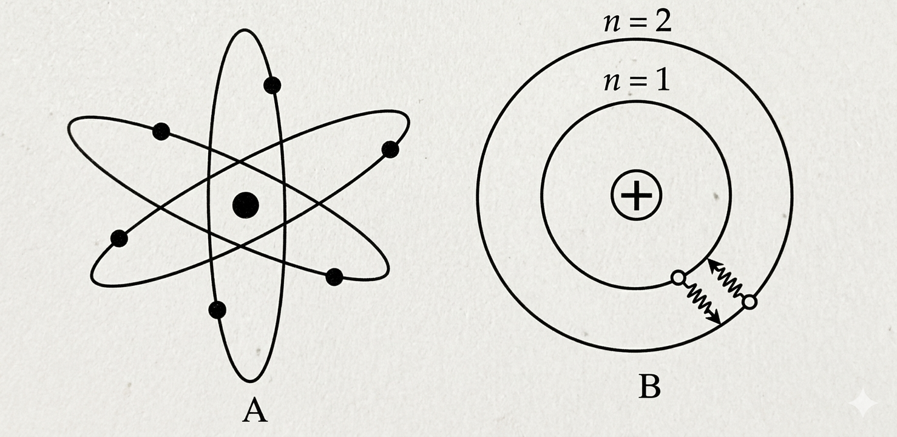

চিত্রে একটি পরমাণুর মডেলের বিভিন্ন শক্তিস্তর দেখানো হয়েছে।(ক) আইসোটোপ কাকে বলে? ০১
(খ) রাদারফোর্ডের পরমাণু মডেলকে সৌরজগতের সাথে তুলনা করা হয়েছে কেন? ০২
(গ) উদ্দীপকের B মডেলের সর্বশেষ শক্তিস্তরে কৌনিক ভরবেগ হিসাব করো। ০৩
(ঘ) উদ্দীপকের মডেল দুটির মধ্যে কোনটি অধিক গ্রহনযোগ্য? বিশ্লেষণ করো। ০৪
| মৌল | পারমাণবিক সংখ্যা | নিউট্রন সংখ্যা |
|---|---|---|
| X | 11 | 12 |
(ক) 2d কি সম্ভব? ০১
(খ) 3d ও 4s এর মধ্যে কোনটিতে ইলেকট্রন আগে প্রবেশ করবে? ০২
(গ) উদ্দীপকের দৃশ্যকল্প ১ এর 'X' মৌলটির আপেক্ষিক পারমানবিক ভর নির্ণয় করো। ০৩
(ঘ) উদ্দীপকের দৃশ্যকল্প ২ অনুযায়ী চিকিৎসাক্ষেত্রে আইসোটোপের ব্যবহার লিখো। ০৪